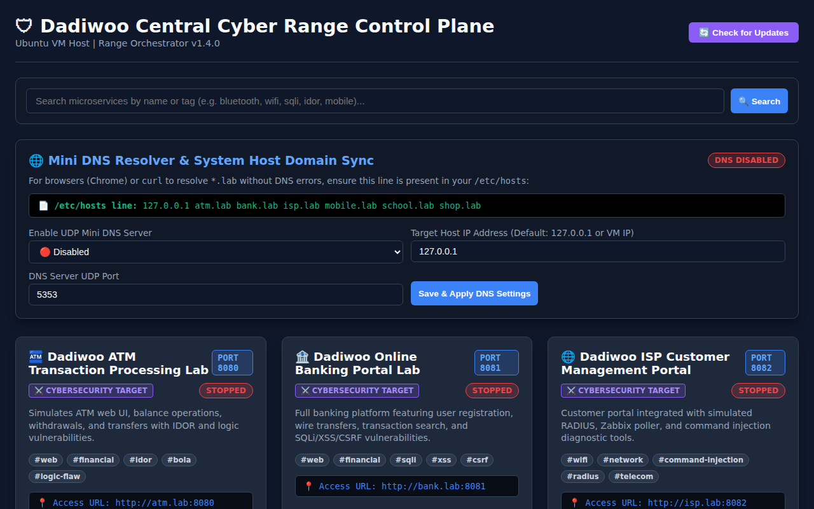
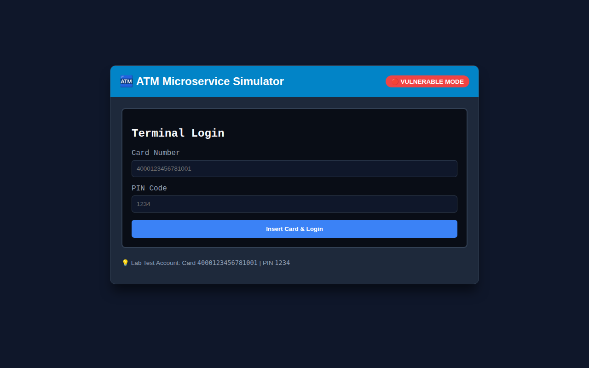
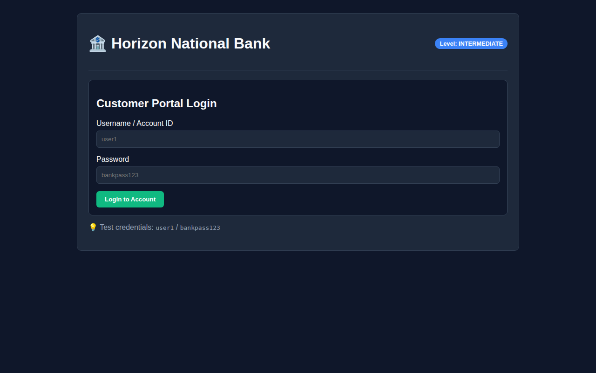
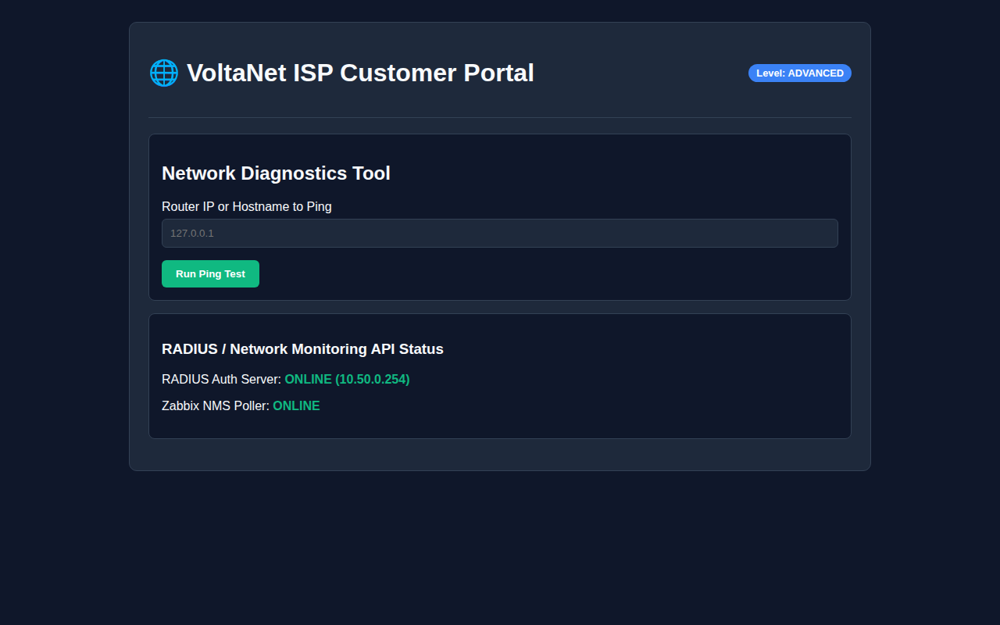
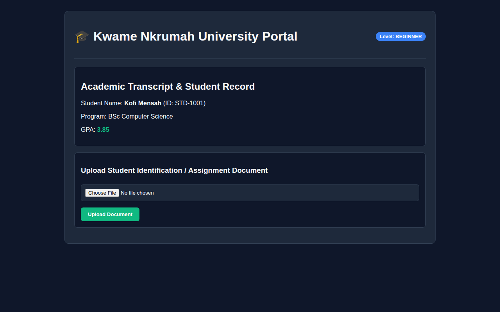
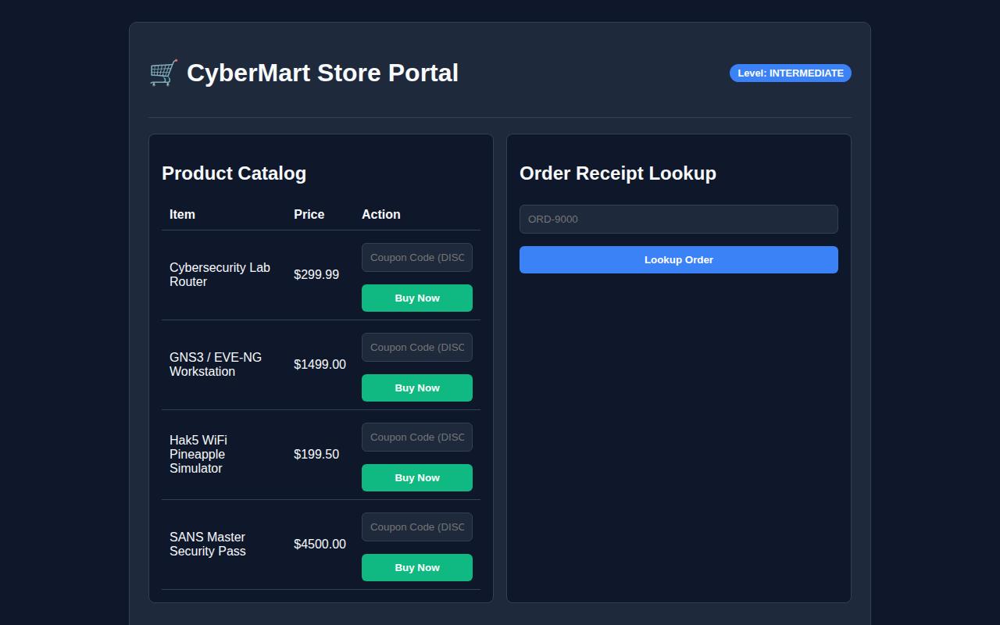
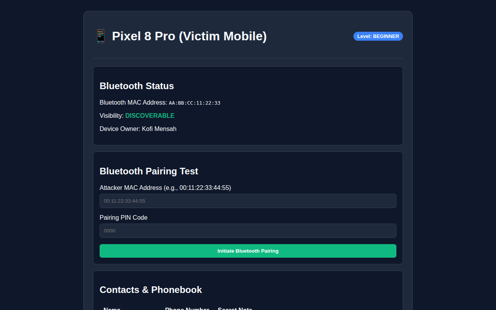

A lightweight, microservice-based personal cyber range designed for virtualized environments (Ubuntu VM inside GNS3, EVE-NG, PNETLab, Proxmox, VMware). Features dynamic port allocation, an embedded UDP Mini DNS server, dual environment modes, and realistic vulnerability labs.

Manage all microservices from a single dashboard (Port 9000). Features simultaneous Start/Stop controls, settings modal popups, live health checks, and 20-item card pagination.
Built-in UDP DNS resolver (`dns/mini_dns.py` on port 5353) automatically resolving `.lab` domain hostnames (`atm.lab`, `bank.lab`, `mobile.lab`) to your host IP.
Switch microservices between ⚔️ Cybersecurity Lab Target Mode (full vulnerabilities active) and 🌐 General Networking Node Mode (pingable reachability test node returning HTTP 503 on auth).
Search microservices by keyword or tag (`osint`, `wifi`, `sqli`, `idor`, `bluetooth`, `command-injection`) with 20 items per page pagination and sidebar status lists.
How the Dadiwoo Cyber Range was architected and built for virtualized networking laboratories.
The Dadiwoo Cyber Range platform was engineered to address the resource constraints of virtualized network simulators (GNS3, EVE-NG, PNETLab, Proxmox). Traditional vulnerable VMs (like Metasploitable) consume 2GB–4GB RAM each, making multi-target network topologies prohibitively heavy. Dadiwoo microservices are designed to consume less than 60MB RAM per container while providing authentic offensive and defensive security exercises.
Attacker (Kali Linux / Wireshark Host)
│
▼
┌───────────────────────────┐
│ Ubuntu VM Host │
│ (192.168.0.166) │
│ │
│ ┌─────────────────────┐ │
│ │ Dadiwoo Control │ │
│ │ Plane (Port 9000) │ │
│ └──────────┬──────────┘ │
│ │ │
┌───────┴─────────────┼─────────────┴────────┐
│ │ │
▼ ▼ ▼
┌──────────────────┐ ┌──────────────────┐ ┌──────────────────┐
│ 🏧 ATM Lab │ │ 🏦 Bank Lab │ │ 📱 Mobile Lab │
│ (atm.lab:8080) │ │ (bank.lab:8081) │ │ (mobile.lab:8085)│
└──────────────────┘ └──────────────────┘ └──────────────────┘
Every component of the platform relies on modern, lightweight, standard technologies.
Core backend language powering the Control Plane, Mini DNS Server, and all 6 microservice application backends.
High-performance ASGI web framework providing non-blocking asynchronous REST endpoints and rapid HTML template rendering.
Zero-configuration embedded relational database engine utilized by each microservice and the central manager for persistent storage.
Modern dark-mode UI styled with Flexbox/CSS Grid, Inter & JetBrains Mono typography, and asynchronous Fetch API for dynamic state updates.
Python DNS encoding and decoding library used to parse binary DNS wire formats over UDP socket port 5353.
Multi-stage containerization configuration isolating services into dedicated Linux network namespaces.
Automated regression test suite covering all REST endpoints, database queries, and environment state toggles.
Native support for virtualized routers (MikroTik, Cisco), firewalls (pfsense, OPNsense), and network monitoring tools (Zabbix, Wazuh).
A comprehensive inventory of all services hosted on the Dadiwoo Cyber Range Control Plane.
| Service Name | Default Port | Domain Name | Primary Stack | Target Role & Flaws |
|---|---|---|---|---|
| 🛡 Dadiwoo Central Control Plane | 9000 | localhost |
FastAPI, SQLite, Jinja2 | Orchestrator dashboard, lab status, custom port binding, DNS sync. |
| 🌐 UDP Mini DNS Resolver | 5353 (UDP) | dns.lab |
Python UDP, dnslib | Resolves `*.lab` A-records to host IP for browser & curl clients. |
| 🏧 ATM Transaction Processing Lab | 8080 | atm.lab |
FastAPI, SQLite, HTML5 | IDOR/BOLA, negative balance withdrawal logic flaw, PIN brute-force. |
| 🏦 Online Banking Portal Lab | 8081 | bank.lab |
FastAPI, SQLite, HTML5 | SQL Injection in login/search forms, Reflected XSS, wire transfer logic. |
| 🌐 ISP Customer Management Portal | 8082 | isp.lab |
FastAPI, SQLite, Ping Tool | Command Injection in diagnostic ping tool, RADIUS subscriber metrics. |
| 🎓 Student University Portal | 8083 | school.lab |
FastAPI, SQLite, File Storage | Transcript lookup IDOR (account `STD-9000`), arbitrary file upload flaw. |
| 🛒 E-Commerce Platform Lab | 8084 | shop.lab |
FastAPI, SQLite, HTML5 | Client price tampering, coupon reuse business logic flaw, receipt IDOR. |
| 📱 Smartphone & Bluetooth Simulator | 8085 | mobile.lab |
FastAPI, SQLite, API | BlueBorne contact exfiltration endpoint, weak Bluetooth pairing PIN (`0000`). |
| 🌊 Wave Chat Social Media Lab | 8086 | wave.lab |
FastAPI, SQLite, Pillow | OSINT profile intelligence gathering, multi-photo asset upload compression (~1-30 KB). |
| 📡 SNMP Network Management Lab | 8087 / 16161 | snmp.lab |
FastAPI, SQLite, UDP SNMP | SNMP v1-v3 walking, community string brute forcing, OID SET exploits, VACM. |
| 🔑 SSH Hacking & Defense Lab | 8088 / 2222 | ssh.lab |
FastAPI, SQLite, Paramiko | Interactive SSH shell, Hydra password cracking, weak RSA key auth, fail2ban. |
| 🏬 API Warehouse Lab | 8089 | apiwarehouse.lab |
FastAPI, SQLite, PyJWT | API Keys, Bearer JWT tokens, BOLA/IDOR, GraphQL introspection, Mass Assignment, Webhook SSRF, HMAC, Postman collection. |
| 🦈 IPv6 Shark Lab | 8090 | ipv6.lab |
FastAPI, SQLite, Jinja2 | IPv6 SLAAC rogue RA injection, NDP spoofing, Extension Header bypass, RA Guard, SEND defense, IPv6 loopback access. |
Simulates an automated teller machine web portal and transaction API. Introduces students to Insecure Direct Object References (IDOR/BOLA) and negative number withdrawal logic flaws.
#web #financial #idor #bola #logic-flawhttp://atm.lab:8080
An enterprise banking web application with customer accounts, wire transfers, and transaction history search. Features SQL Injection in login/search forms and Reflected XSS.
#web #financial #sqli #xss #csrfhttp://bank.lab:8081
Simulates an Internet Service Provider portal with RADIUS subscriber metrics and network ping diagnostic tools vulnerable to Command Injection.
#wifi #network #command-injection #radius #telecomhttp://isp.lab:8082
Academic transcript lookup and fee payment system. Vulnerable to record IDOR (lookup registrar account `STD-9000`) and arbitrary file uploads.
#web #education #osint #file-upload #idorhttp://school.lab:8083
Online store featuring catalog checkout, client-side price tampering, coupon reuse business logic flaws, and receipt lookup IDOR.
#web #retail #logic-flaw #price-tampering #idorhttp://shop.lab:8084
Simulates smartphone Bluetooth discoverability, contact exfiltration endpoints (`/api/v1/bluetooth/exfiltrate`), BlueBorne flaws, and weak pairing PINs (`0000`).
#bluetooth #mobile #wireless #osint #blueborne #phonehttp://mobile.lab:8085
Fake social media platform for OSINT reconnaissance, profile intelligence gathering, multi-photo asset compression analysis (~1-30 KB), and weak Let's Encrypt staging certificate decryption testing.
#web #social #osint #profile #photo #certificatehttp://wave.lab:8086SNMP v1, v2c, and v3 network management server for MIB tree walking, community string brute forcing, OID SET exploits, and VACM view restrictions.
#snmp #network #mib #vacuum #brute-forcehttp://snmp.lab:8087Interactive SSH server (TCP port 2222) for Hydra password cracking, weak RSA private key authentication, restricted shell breakouts, and Fail2Ban auto-blocking.
#ssh #network #hydra #brute-force #fail2ban #priveschttp://ssh.lab:8088Comprehensive API hacking platform covering API keys, Bearer JWT tokens, BOLA/IDOR, GraphQL introspection, Mass Assignment, Webhook SSRF, HMAC signatures, downloadable Postman collections, and Secure API mode compliance auditing.
#api #postman #jwt #bearer-token #graphql #idor #ssrfhttp://apiwarehouse.lab:8089Single-page blog and cybersecurity portfolio microservice operating over IPv6 transport and dual-stack sockets. Features interactive Red Team IPv6 attack scenarios (SLAAC, NDP spoofing, Extension Header bypass) and Blue Team defenses (RA Guard, SEND, ip6tables).
#ipv6 #network #redteam #blueteam #dual-stack #bloghttp://ipv6.lab:8090 / http://[::1]:8090To enable instant domain resolution for atm.lab, bank.lab, isp.lab, school.lab, shop.lab, and mobile.lab:
Copy the exact line provided on the Dadiwoo Control Plane Dashboard (`http://
Append it to your machine's `/etc/hosts` file:
Capture unencrypted microservice HTTP and DNS traffic in real time.
When conducting Open Source Intelligence (OSINT) testing on microservice cyber ranges:
Access the Control Plane at http://localhost:9000 or http://<YOUR_VM_IP>:9000.